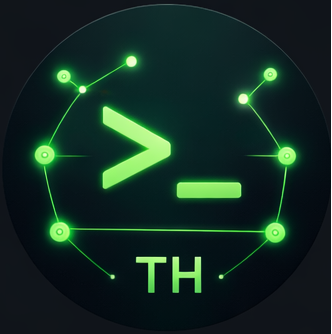
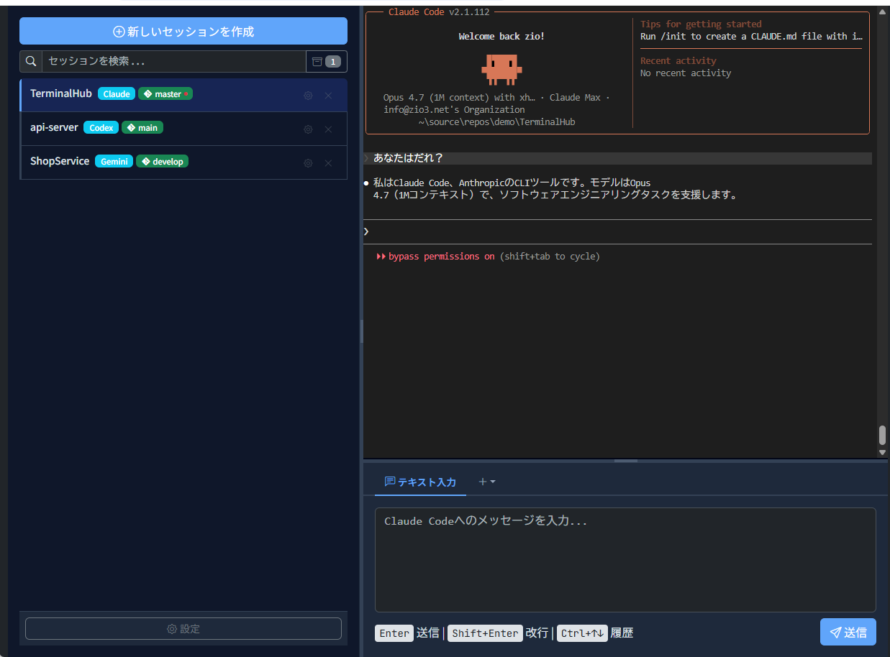
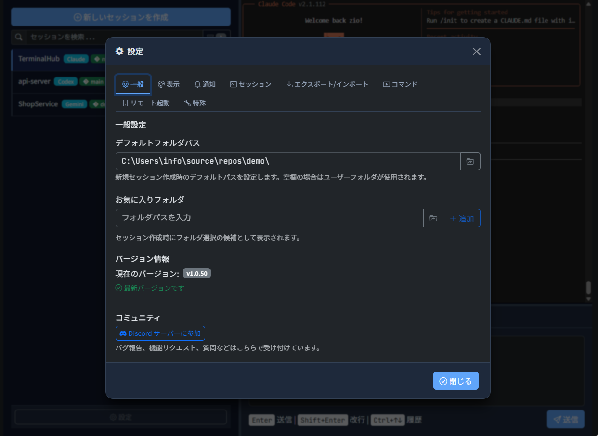

Multiple AI CLI sessions, in a single window. Zero switching cost.
For Claude Code / Codex CLI / Antigravity / Grok.
Session save / restore, parallel work, completion notifications — and first-class IME input for CJK and other composition-based languages.
Try switching sessions or typing a command.
This is a mock demo. Actual CLIs don't run here, and the UI differs slightly from the real product.
Click a card to see a screenshot
Switch between AI CLI sessions with one click. Parallel work fits in a single window. Session state is saved automatically and restored on restart.
Configure key flags for Claude Code / Codex CLI / Antigravity / Grok right from the settings dialog. Get started in seconds.
Most Windows terminals struggle with composition-based input — characters jump around mid-conversion in CJK, Thai, Vietnamese, and more. TerminalHub's dedicated input panel sends only the finalized text, so IME behaviour stays stable.

